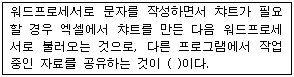
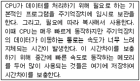
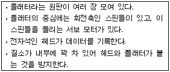
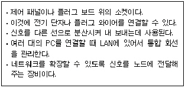

PC정비사-1급 (2004-10-24 기출문제)
1과목: PC운영체제
1. 도스에서 압축 해제를 할 때 올바른 명령은?
- PKZIP a
- LHA -a
- PKUNZIP
- ARJ c
(정답률: 알수없음)

2. Windows XP 제어판의 시스템에서 설정 가능한 항목이 아닌 것은?
- 사운드카드와 조이스틱 인터럽트 제어
- 네트워크 프로토콜 설치 및 변경
- 하드웨어 인터럽트와 입출력 범위 설정
- 가상메모리, HDD 최적화 상태
(정답률: 알수없음)
3. 리눅스 명령을 이용하여 ICQA 파일을 ICQA1 파일로 하드링크 형식으로 복사하기 위한 명령은?
- cp -a ICQA ICQA1
- cp -P ICQA ICQA1
- cp -I ICQA ICQA1
- cp -f ICQA ICQA1
(정답률: 70%)
4. FAT32에 대한 설명으로 잘못된 것은?
- Windows 95 OSR2와 Windows 98에서 지원되며, 하드디스크 2GB이상의 파티션을 설정하는 것이 가능하다.
- 하나의 드라이브에 대해 최대 2³2개의 클러스터(cluster)를 가질 수 있다.
- Windows NT 계열에서는 파티션매직이라는 FAT32 변환기가 자체 내장되어 있다.
- 8 GB 이하의 볼륨에서 클러스트의 크기는 2 KB이다.
(정답률: 알수없음)
5. Windows XP의 아래 레지스트리 값들 중에서 RFC2018에 정의된 Selective Acknowledgement를 활성화하는 것은?
- TcpWindowSize
- Tcp1323Option
- DefaultTTL
- SackOpt
(정답률: 알수없음)
6. Windows XP에서 자신의 컴퓨터 배경 화면을 바꾸고자 할 때 제어판 항목 중에서 어느 아이콘을 설정해야하는가?
- 관리도구
- 새 하드웨어 추가
- 글꼴
- 디스플레이
(정답률: 80%)
7. Windows XP 제어판에는 다양한 아이콘들이 있다. 이들 아이콘들 중에서 새로운 하드웨어를 추가할 경우에 드라이버를 찾아 수동으로 설치할 때 사용하는 기능이 포함된 것은?
- 시스템
- 프로그램 추가/제거
- 사운드 및 오디오 장치
- 사용자 계정
(정답률: 알수없음)
8. Windows XP로 설치 되어 있는 컴퓨터의 장치관리를 하려고 한다. 이에 해당하는 실행 파일은?
- Dfrag.msc
- Devmgmt.msc
- Msconfig
- Rsop.msc
(정답률: 50%)
9. Windows XP 기본 화면 구성 중에서 기존의 Windows 9x 버전에서의 시스템 트레이에 해당하는 영역은?
- 알림영역
- 작업표시줄
- 도구모음줄
- 빠른실행
(정답률: 알수없음)
10. Windows XP에서 네트워크 구성요소를 추가하려고 한다. 이 때 네트워크 구성요소에 속하지 않는 것은?
- 클라이언트
- 서비스
- 어댑터
- 프로토콜
(정답률: 알수없음)
11. Linux에서 모든 파일의 목록과 자세한 사항을 내림차순으로 정렬하기 위한 명령은?
- ls -alc
- ls -als
- ls -alr
- ls -alf
(정답률: 알수없음)
12. 다음 ( )에 적당한 용어는?

- OLE
- DLL
- INI
- PCX
(정답률: 59%)
13. 둘 이상의 프로세서들이 서로 연결하여, 같은 제어 프로그램 하에 같은 기억장치로 둘 이상의 작업을 동시에 실행하는 것은?
- 다중프로그래밍(Multi-Programming)
- 다중프로세싱(Multi-Processing)
- 실시간처리(Real Time Processing)
- 일괄처리(Batch Processing)
(정답률: 70%)
14. 인터넷 익스플로러의 버전 중에서 Windows XP에서 기본적으로 제공하는 것은?
- 6.0
- 6.5
- 7.0
- 7.5
(정답률: 알수없음)
15. 인터넷상의 원격지 서버와 직접 접속한 후 마치 자신의 컴퓨터처럼 파일을 관리할 수 있는 프로그램은?
- Telnet
- Hyperterminal
- Archie
- Gopher
(정답률: 60%)
2과목: PC주변기기
16. CPU가 사용하는 클럭을 이용하여 자료 전송을 하는 방법은?
- DMA
- PIO MODE
- USB
- AGP
(정답률: 알수없음)
17. 하드디스크의 타입을 설정할 수 있는 항목은?(단, 어워드 바이오스 기준)
- Standard CMOS Setup
- BIOS Features Setup
- Chipset Features Setup
- PNP/PCI Configuration
(정답률: 알수없음)
18. 마우스를 연결하여 사용할 수 없는 것은?
- USB
- PS/2
- SERIAL
- IEEE 1394
(정답률: 알수없음)
19. 플로피디스크 드라이브에 대한 설명 중 잘못된 것은?
- 3.5인치와 5.25인치, 8인치의 세 종류가 있다.
- 초당 100~200KB의 전송 속도를 가진다.
- 3.5인치 드라이버의 경우 720KB와 1.44MB 종류가 있다.
- 보조 기억 장치이다.
(정답률: 40%)
20. 하드디스크의 저장방식이 아닌 것은?
- NRZ(Non Return to Zero)
- IDE(Integrated Drive Electronic)
- MFM(Modified Frequency Modulation)
- RLL(Run Length Limited)
(정답률: 알수없음)
21. 열전사 방식을 사용하는 프린터로서 조그만 거품을 만들어 그 힘으로 잉크를 분사하는 방법을 사용하는 프린터는?
- 도트 프린터
- 레이저 프린터
- 버블젯 프린터
- 가열 잉크젯 프린터
(정답률: 50%)
22. 스캐너가 사용되는 방식이 아닌 것은?
- 시리얼 Port 방식
- SCSI I/O방식(전용 카드 방식)
- COM Port 방식
- USB Port 방식
(정답률: 40%)
23. 사운드 카드에 대한 다음 설명 중 옳지 않은 것은?
- 시스템의 오디오 부분을 담당하는 사운드 카드들은 ISA 방식을 고수하고 있다.
- 사운드 카드를 새로 설치할 경우 하드디스크, CD-ROM 드라이브, CPU 등과 가능한 멀리 떨어지도록 설치하는 것이 음질 향상에 좋다.
- 사운드 카드에 달려 있는 사운드 폰트용 ROM 또는 RAM은 미디 음악을 연주할 때 원래 악기의 음색을 제공하기 위해 필요한 것이다.
- 새로운 사운드 카드를 구입하고자 할 때 고려해야 할 조건으로 풍부한 미디 음원 지원 여부, 게임 및 멀티미디어 타이틀을 지원하기 위한 3D 사운드 기능 지원여부, 전화와 화상회의를 위한 완전 이중 방식 오디오 지원 여부 등을 고려하여야 한다.
(정답률: 알수없음)
24. 다음은 무엇에 대한 설명인가?

- 롬(ROM)
- 플래시롬(Flash ROM)
- 캐시 메모리(Cache Memory)
- 마스크 롬(Mask ROM)
(정답률: 93%)
25. 다음은 특정 컴퓨터 부품에 대한 설명이다. 설명에 해당하는 부품은?

- CD-롬 드라이브
- 하드디스크
- 플로피디스크 드라이브
- CD-RW
(정답률: 60%)
26. CD-ROM의 전송속도가 느린 직접적인 이유는?
- 데이터의 기록방법이 등선속도방식이므로
- CD-ROM의 회전속도가 느리므로
- ATAPI 인터페이스를 사용하므로
- 반사되는 빛을 분석하여 데이터를 인식하므로
(정답률: 30%)
27. 펜티엄4(프레스캇) CPU의 L2 캐시 메모리의 용량은 얼마인가?
- 64KB
- 128KB
- 512KB
- 1024KB
(정답률: 알수없음)
28. 모니터와 본체를 연결하는 커넥터는 15핀을 사용한다. 다음중 핀의 번호와 사용 용도가 잘못된 것은?
- 1, 2, 3 - R, G, B 선
- 6, 7, 8 - 접지
- 4, 5, 9 - 핀 없음
- 13, 14 - 수평, 수직동기
(정답률: 알수없음)
29. 컴퓨터의 입력장치와 연결장치의 설명으로 잘못된 것은?
- 키보드 → 키보드커넥터, PS/2포트, USB포트
- 마우스 → 시리얼포트, PS/2포트, USB포트
- 프린터 → 시리얼포트, PS/2포트, USB포트
- MIDI → 게임포트, USB포트
(정답률: 알수없음)
30. DVD-ROM에 대한 설명으로 잘못된 것은?
- 비디오, 오디오, 컴퓨터 데이터를 포괄하는 새로운 저장매체
- '16:9' 와이드 화면을 수용하며, 음향은 5.1 채널이 지원
- MPEG 4에 따라 부호화하여 저장
- 보통 4.7GB에서 최대 17GB까지 저장 가능
(정답률: 알수없음)
3과목: 디지털 논리회로
31. 디지털 집적회로에 대한 설명으로 잘못된 것은?
- TTL은 디지털 집적회로 중의 하나이다.
- C-MOS는 디지털 집적회로 중의 하나이다.
- C-MOS는 N형 트랜지스터를 서로 조합해 제작된 집적회로이다.
- 디지털 집적회로는 반도체 구조나 전기적 특성을 고려하여 제작된다.
(정답률: 알수없음)
32. 플립플롭으로 구성할 수 없는 회로는?
- 레지스터
- 카운터
- RAM
- 전가산기
(정답률: 알수없음)
33. 통신 수단을 이용하여 한 장소에서 다른 장소로 데이터를 전송할 때 오류 검출을 위해 사용하는 방식은?
- 패리티비트
- 보수
- 3초과
- 8421코드
(정답률: 67%)
34. 순서 논리회로의 구성에 관한 설명 중 잘못된 것은?
- 조합 논리회로를 포함한다.
- 입력 신호와 레지스터의 상태에 따라서 출력이 결정된다.
- 이 회로의 한 예로 카운터를 들 수 있다.
- 기억소자가 필요 없다.
(정답률: 알수없음)
35. A+A' · B을 간단히 정리한 것은?
- B
- A + B
- A · B'
- A · B
(정답률: 47%)
4과목: PC유지보수
36. 현재 시스템은 Award Bios의 CMOS를 이용하고 있다. 이 시스템의 절전 기능에 대하여 설정하는 곳은?
- Standard CMOS Setup
- Power Management Setup
- PNP AND PCI Setup
- BIOS Features Setup
(정답률: 알수없음)
37. Windows용 음악 프로그램을 이용하여 음악을 들으려 하는데 스피커에서는 아무 소리도 나지 않지만 해당 음악 프로그램은 정상적으로 돌아가고 있다. 이러한 상황이 발생한 원인에 속하지 않는 것은?
- 사운드 카드 드라이버가 오류이다.
- 그래픽 카드에 문제가 있다.
- Windows의 볼륨 조절 기능에서 소리 출력을 없앴다.
- 스피커의 볼륨을 최대한 작게 설정했다.
(정답률: 100%)
38. SCSI 방식의 HDD로 부팅을 시도하려는데 부팅이 되지 않는다. 다음 중 어떤 작업이 우선되어야 하는가?
- 메인보드 BIOS에서 부팅순서를 SCSI로 가장 먼저 설정했는지 체크한다.
- 메인보드에 이상이 있는지 체크한다.
- SCSI방식의 HDD에 부트섹터 오류인지를 체크한다.
- 연결케이블이 단락되었는지 체크한다.
(정답률: 알수없음)
39. CMOS setup에서 하드디스크가 인식되지 않는다. 일반적인 원인은?
- 하드디스크 점퍼설정이 Slave로 되어있다.
- 하드디스크 점퍼설정이 Master로 되어있다.
- 하드디스크 점퍼설정이 Cable로 되어있다.
- 하드디스크 케이블이 잘못 연결되어 있다.
(정답률: 알수없음)
40. 인쇄속도가 느려지거나 프린터가 제대로 작동하지 않는 경우의 해결 방법으로 잘못된 것은?
- CMOS Setup에서 패러럴 포트의 설정을 바꿔본다.
- 프린터 장치 드라이버를 새로운 것으로 바꿔본다.
- 하드디스크 공간이 부족한지 확인한다.
- 인쇄 작업을 취소한 후, 다시 인쇄 작업을 시작한다.
(정답률: 알수없음)
41. Windows를 사용하는 도중 속도가 점점 느려지는 현상이 발생하였다. 문제의 원인으로 잘못된 것은?
- 레지스트리가 점점 커지고 불필요한 내용이 쌓이기 때문이다.
- Windows에서 사용하는 DLL과 드라이버 파일이 많아지기 때문이다.
- 하드디스크의 단편화가 심해지기 때문이다.
- 디스크 캐시와 가상 메모리의 성능이 저하되기 때문이다.
(정답률: 알수없음)
42. 좋은 프린터를 선정하고자 할 때 고려 사항이 아닌 것은?
- 해상도
- 메모리
- 출력 속도
- 프린터 포트
(정답률: 80%)
43. CMOS Setup의 기능으로 잘못된 것은?
- 입출력 데이터의 처리 및 연산기능 수행
- 메인보드의 성능과 기능을 제어
- 컴퓨터의 시동(Booting)과 하드웨어를 제어
- 컴퓨터에 장착된 장치를 인식하고 관리
(정답률: 82%)
44. 컴퓨터의 주변장치 연결 방식에는 여러 가지 종류가 있다. 다음 중 가장 빠른 데이터 전송 속도를 제공하는 연결 방식은?
- USB
- IEEE1394
- PS/2
- SCSI
(정답률: 70%)
45. AMI(American Megatrends Inc)의 BIOS프로그램의 구성메뉴에 속하지 않는것은?
- POWER MANAGEMENT SETUP
- STANDARD CMOS SETUP
- ADVANCED CHIPSET SETUP
- PnP/PCI CONFIGURATION SETUP
(정답률: 알수없음)
46. "MMSYSTEM266 장치가 로드될 수 없습니다."와 같이 MMSYSTEM 장치 관련 에러가 발생하는 원인으로 잘못된 것은?
- 그래픽 관련 드라이버 파일이 손상되었다.
- 사운드 관련 드라이버 파일이 손상되었다.
- 모뎀 관련 드라이버 파일이 손상되었다.
- Windows의 DLL파일이 손상되었다.
(정답률: 알수없음)
47. 시스템이 C드라이브를 엑세스 할 수 있으나, C드라이브로 부팅은 되지 않는다. 그 원인 및 해결방법과 관계가 없는것은?
- 신형 BIOS의 경우 Boot 기기 순서를 정하는 항목에서 HDD0이 있는지 확인하고 없으면 HDD0으로 설정한다.
- FDISK에서 Active설정을 확인한다.
- 시스템 파일을 C드라이브로 전송한다.
- HDD의 파티션을 C, D드라이브 2개로 분할한다.
(정답률: 55%)
48. CMOS SETUP 프로그램 중 "BIOS FEATURE SETUP"에서 설정하는 내용이 잘못된 것은?
- 바이러스 경고 여부
- CPU내부 캐쉬 사용 여부
- 사용자 암호 설정
- 초당 키보드의 입력속도 설정
(정답률: 알수없음)
49. 프로그램을 안전하게 제거하는 방법으로 잘못된 것은?
- 제어판이 프로그램 추가/제거 기능을 이용한다.
- 프로그램에서 제공하는 언인스톨 기능을 이용한다.
- 탐색기에서 프로그램 폴더를 찾아 삭제한다.
- 클린스윕과 같은 설치/제거 관리 프로그램을 이용한다.
(정답률: 알수없음)
50. 사운드카드에 대한 일반적인 고장원인에 따른 처방 방법으로 가장 알맞은 것은?
- 사운드 카드에 미디 키보드를 연결한 후 시스템이 다운된 경우-메인 메모리를 제거한 후 다시 장착한다.
- Windows를 설치하는 도중에 사운드 카드를 찾지 못하는 경우-주변기기와의 충돌을 확인하여 문제를 수정한 후 새 하드웨어 추가를 이용하여 해결한다.
- 오디오 CD가 구동되지 않는 경우-Windows를 재설치 한다.
- 사운드 카드를 장착 후 모니터 화면이 떨리는 경우-CD-ROM DRIVE의 전원을 제거한다.
(정답률: 알수없음)
5과목: PC네트워크
51. 브리지(Bridge)에 대한 설명 중 잘못된 것은?
- LAN과 LAN을 연결한다.
- 프로토콜이 다른 LAN을 확장시 사용한다.
- Data의 움직임을 제어함으로써 내부와 외부간 LAN의 정보량과 트래픽 양을 조절하는 기능이 있다.
- 데이터 링크 계층에서 작동한다.
(정답률: 24%)
52. 네트워크의 관리 및 네트워크의 장치와 그들의 동작을 감시, 관리하는 프로토콜은?
- SMTP
- SNMP
- SIP
- SDP
(정답률: 알수없음)
53. IP에 대한 설명으로 잘못된 것은?
- 32 비트 주소체계를 갖는 IPv4의 주소 부족으로 IPv6가 등장했다.
- IPv4에서는 Flow Labeling 기능과 인증, 프라이버시를 제공한다.
- IPv6에서는 Next Header가 있어서 확장된 헤더를 가리키도록 하고 있다.
- IPv6에서는 Checksum과 TTL 등과 같은 헤더가 제거되었다.
(정답률: 알수없음)
54. 패킷 스위칭 기법에 대한 설명으로 잘못된 것은?
- 패킷은 통신회선과 패킷스위치를 통해 전달된다.
- store-and-forward 전송방식을 이용한다.
- 링크에 도착한 패킷을 저장하기 위한 버퍼가 필요없다.
- 패킷스위칭은 일반적으로 통계적 다중화(Statistical Multiplexing)을 이용한다.
(정답률: 54%)
55. 웹브라우저에서 'XXX 라는 URL을 가진 서버의 위치를 찾을 수 없습니다.'라는 에러 메시지가 나왔을 때 이 에러를 일으킨 원인과 점검 방법으로 잘못된 것은?
- 주소 입력 상자에 입력한 URL의 철자가 올바른지 확인한다.
- 접속하려는 곳의 서버가 어떤 문제가 다운됐거나, 인터넷 접속 서비스 업체의 네트워크상의 문제이므로 나중에 다시 접속을 시도해 본다.
- 프록시 서버를 설정하지 않아 발생하는 문제로 프록시 서버를 설정한다.
- TCP/IP 설정에서 DNS 서버 주소가 올바르게 설정되었는지 확인한다.
(정답률: 알수없음)
56. IP주소를 효과적으로 사용, 관리하기 위하여 32Bit로 이루어진 인터넷 주소를 8Bit씩 쪼개어서 각각을 A, B, C, D Class 등으로 관리하고 있다. 각 Class 당 포함되는 호스트의 수로 잘못된 것은?
- A Class : 0~126
- B Class : 128~191
- C Class : 192~223
- D Class : 224~254
(정답률: 알수없음)
57. SNMP 프로토콜의 기본 3작동이 아닌 것은?
- GET : 관리자가 대리인에게 있는 객체의 값을 가져온다.
- SET : 관리자가 대리인에 있는 객체의 값을 변경한다.
- TRAP : 특정 상황 발생을 관리자에게 알린다.
- MIB : 관리자가 지정한 대리인의 동작을 멈추게 한다.
(정답률: 50%)
58. 다음 설명이 가리키는 네트워크 장비는?

- 라우터
- 허브
- 스위치
- LAN
(정답률: 64%)
59. 라우터(Router)에 대한 설명과 거리가 먼 것은?
- 동일한 전송 프로토콜을 사용하는 분리된 네트워크를 연결해 준다.
- 알고리즘에 따라 자동으로 경로가 결정된다.
- 메시지 형식 변화, 문자코드 변환, 주소 변환 등의 기능을 한다.
- 여러 경로 중 가장 효율적인 경로를 선택하여 패킷을 보낸다.
(정답률: 알수없음)
60. OSI 7계층의 구조를 순서대로 (하부구조부터) 바르게 나열한 것은?
- 네트워크→데이터 링크→물리→세션→표현 →응용→트랜스 포트
- 응용→표현→세션→물리→데이터 링크→트랜스 포트→네트워크
- 세션→표현→물리→응용→트랜스 포트→데이터 링크→네트워크
- 물리→데이터 링크→네트워크→트랜스 포트 →세션→표현→응용
(정답률: 알수없음)